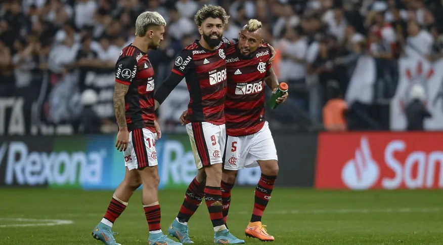
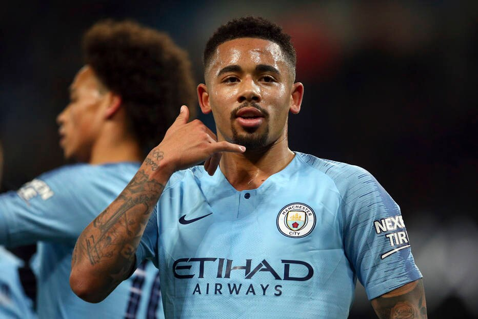

Flamengo domina ranking de melhores jogadores do Brasil eleito por torcedores
As estrelas dos principais favoritos ao título do Campeonato Brasileiro integram a lista daqueles que o torcedor considera os melhores jogadores atuando no País. E quem puxa a fila é o atacante Gabigol, do Flamengo, que recebeu 12% dos votos. O atacante é seguido de perto pelo único estrangeiro da lista, o meia uruguaio Arrascaeta, seu companheiro de clube, que teve 10% das indicações. PUBLICIDADE
Brasileiro que trocou 'Barcelona campeão de tudo' pelo City lembra era sem glórias e plano para clube virar potência
Há mais de uma década, o Manchester City persegue o inédito título da Champions League. Um dos favoritos nesta temporada, o clube inglês está quase garantido nas semifinais depois de vencer o Bayern no jogo de ida por 3 a 0. As equipes se enfrentam no jogo de volta pelas quartas de final, nesta quarta-feira (19).
A incrível marca negativa que Kevin Durant atingiu nos playoffs da NBA
O Phoenix Suns volta a jogar em casa nesta terça-feira, às 23h (Brasília), no jogo 2 da série de primeira rodada dos playoffs da NBA contra o LA Clippers, com transmissão pela ESPN no Star+. Kevin Durant tentará enfim acabar com um indesejado jejum nos playoffs da NBA.